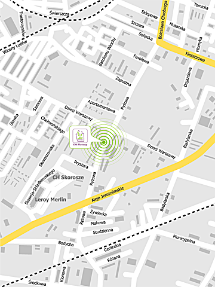

Kontakt
Niepubliczny Zakład Opieki Zdrowotnej Centrum Medyczne Platany
ul. Ryżowa 44, 02-495 Warszawa
tel. 22 244 58 88
faks 22 244 58 85
NIP 522 291 48 84
Zapraszamy w godzinach:
poniedziałek - piątek: 8.00 - 20.00
sobota: 9.00 - 13.00
dojazd autobusami: 129, 178, 187, 191, 207, 401, 517 (przystanek „Dzieci Warszawy”)

Odwiedź nasz profil na Facebooku